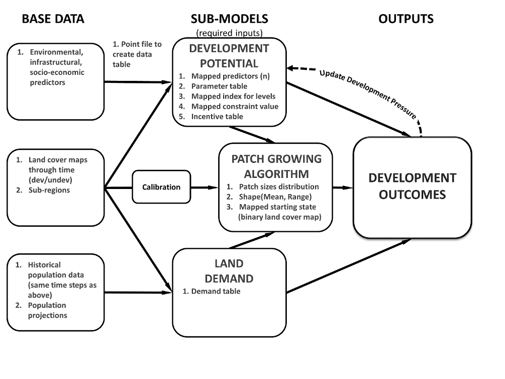

DESCRIPTION
r.futures.* is an implementation of FUTure Urban-Regional
Environment Simulation (FUTURES) which is a model for multilevel
simulations of emerging urban-rural landscape structure. FUTURES
produces regional projections of landscape patterns using coupled
submodels that integrate nonstationary drivers of land change: per
capita demand (DEMAND submodel), site suitability (POTENTIAL submodel),
and the spatial structure of conversion events (PGA submodel).
This is FUTURES version 1.0.0,
see GitHub repository
for installation instructions, citation, and reporting issues.
Submodels
- DEMAND
- DEMAND estimates the rate of per capita land consumption
specific to each subregion. Projections of land consumption are based
on extrapolations between historical changes in population
and land conversion based on scenarios of future population growth.
How to construct the per capita demand relationship for subregions depends
on user's preferences and data availability.
Land area conversion over time can be derived for the USA, e.g.
from National Land Cover Dataset.
A possible implementation of the DEMAND submodel is available as module
r.futures.demand.
- POTENTIAL
- The POTENTIAL submodel uses site suitability modeling approaches
to quantify spatial gradients of land development potential.
The model uses multilevel logistic regression to
account for hierarchical characteristics of the land use system
(variation among jurisdictional structures) and
account for divergent relationships between predictor and response variables.
To generate a binary, developed-undeveloped response variable
using a stratified-random sample,
see module r.sample.category.
The coefficients for the statistical model that are used to
calculate the value of development potential can be derived in different ways,
one possible implementation using R will be available
as module r.futures.potential.
One of the predictor variables is development pressure (computed using
r.futures.devpressure)
which is updated each step and thus creates positive feedback
resulting in new development attracting even more development.
- PGA
- Patch-Growing Algorithm is a stochastic algorithm, which
simulates undeveloped to developed land change by iterative site selection
and a contextually aware region growing mechanism.
Simulations of change at each time step feed development pressure back
to the POTENTIAL submodel, influencing site suitability for the next step.
PGA is implemented in r.futures.pga.

Figure: FUTURES submodels and input data
Input data
We need to collect the following data:
- Study extent and resolution
- Specified with g.region command.
- Subregions
- FUTURES is designed to capture variation across specified subregions
within the full study extent. Subregions can be for example counties.
DEMAND and POTENTIAL can both be specified
according to subregions.
Subregion raster map contains the subregion index for each cell as integer starting from 1.
If you do not wish to model by subregion, all values in this map should be 1.
- Population data
- DEMAND submodel needs historical population data for each subregion
for reference period and population projections for the simulated period.
- Development change
- Based on the change in developed cells in the beginning and
end of the reference period, and the population data,
DEMAND computes how many cells to convert for each region at each time step.
Development change is also used for deriving the patch sizes and shape in calibration step
(see r.futures.calib) to be used in PGA submodel.
DEMAND and PGA require a raster map representing the starting state
of the landscape at the beginning of the simulation (developed = 1,
available for development = 0, excluded from development as NULLs).
- Predictors
- Development potential (POTENTIAL submodel) requires
a set of uncorrelated predictors (raster maps) driving the land change.
These can include distance to roads, distance to interchanges, slope, ...
- Development pressure
- The development pressure variable is one of the predictors,
but it is recalculated at each time step to allow for positive feedback
(new development attracts more development). For computing development pressure,
see r.futures.devpressure.

Figure: FUTURES simulation result
REFERENCES
-
Meentemeyer, R. K., Tang, W., Dorning, M. A., Vogler, J. B., Cunniffe, N. J., & Shoemaker, D. A. (2013).
FUTURES: Multilevel Simulations of Emerging
Urban-Rural Landscape Structure Using a Stochastic Patch-Growing Algorithm.
Annals of the Association of American Geographers, 103(4), 785-807.
DOI: 10.1080/00045608.2012.707591
- Dorning, M. A., Koch, J., Shoemaker, D. A., & Meentemeyer, R. K. (2015).
Simulating urbanization scenarios reveals
tradeoffs between conservation planning strategies.
Landscape and Urban Planning, 136, 28-39.
DOI: 10.1016/j.landurbplan.2014.11.011
- Petrasova, A., Petras, V., Van Berkel, D., Harmon, B. A., Mitasova, H., & Meentemeyer, R. K. (2016).
Open Source Approach to Urban Growth Simulation.
Int. Arch. Photogramm. Remote Sens. Spatial Inf. Sci., XLI-B7, 953-959.
DOI: 10.5194/isprsarchives-XLI-B7-953-2016
SEE ALSO
r.futures.pga,
r.futures.parallelpga,
r.futures.devpressure,
r.futures.calib,
r.futures.demand,
r.futures.potsurface,
r.sample.category
AUTHORS
Corresponding author:
Ross K. Meentemeyer, rkmeente ncsu edu,
Center for Geospatial Analytics, NCSU
Original standalone version:
Ross K. Meentemeyer *
Wenwu Tang *
Monica A. Dorning *
John B. Vogler *
Nik J. Cunniffe *
Douglas A. Shoemaker *
Jennifer A. Koch **
* Department of Geography and Earth Sciences, UNC Charlotte
** Center for Geospatial Analytics, NCSU
Port to GRASS GIS and GRASS-specific additions:
Vaclav Petras, NCSU GeoForAll
Developement pressure, demand and calibration and preprocessing modules:
Anna Petrasova, NCSU GeoForAll